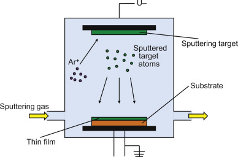
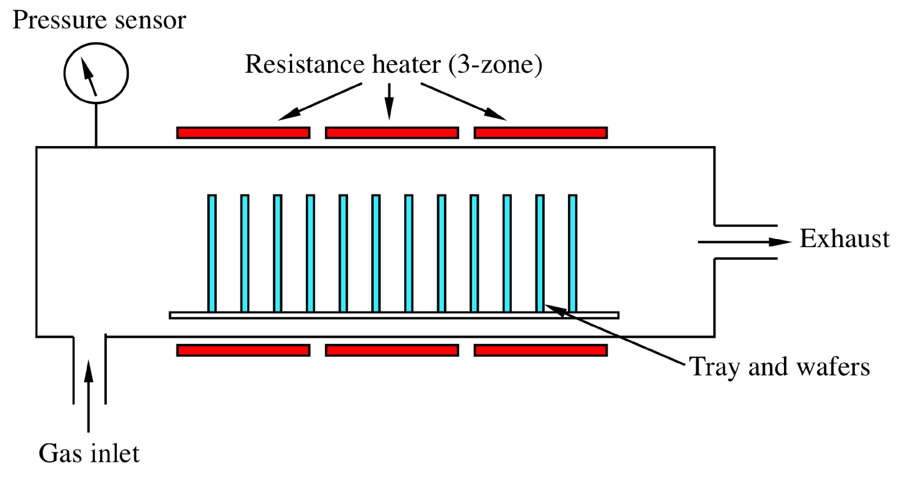

[1] Describe the applications of Nanotechnology in Medicine.
Nanotechnology in Medicine - Nanoparticles in Medicine
The use of nanotechnology in medicine offers some exciting possibilities. Some techniques are only imagined,
while others are at various stages of testing, or actually being used today.
Nanotechnology in medicine involves applications of nanoparticles currently under development, as well as longer
range research that involves the use of manufactured nano-robots to make repairs at the cellular level
(sometimes referred to as nanomedicine).
Whatever you call it, the use of nanotechnology in the field of medicine could revolutionize the way we detect
and treat damage to the human body and disease in the future, and many techniques only imagined a few years ago
are making remarkable progress towards becoming realities.
Nanotechnology in Medicine Application: Drug Delivery
One application of nanotechnology in medicine currently being developed involves employing nanoparticles to
deliver drugs, heat, light or other substances to specific types of cells (such as cancer cells). Particles are
engineered so that they are attracted to diseased cells, which allows direct treatment of those cells. This
technique reduces damage to healthy cells in the body and allows for earlier detection of disease.
For example researchers at North Carolina State University are developing a method to deliver cardiac stem cells
to damaged heart tissue. They attach nanovesicles that are attracted to an injury to the stem cells to increase
the amount of stem cells delivered to an injured tissue.
Researchers John Hopkins University are using nanoimprint lithography to
manufacture a sensor that can detect covid-19 and other viruses that can be used with hand held testing device
for quick reults.
Researchers at Worcester Polytechnic Institute are using antibodies attached to carbon nanotubes in chips to
detect cancer cells in the blood stream. The researchers believe this method could be used in simple lab tests
that could provide early detection of cancer cells in the bloodstream.
A test for early detection of kidney damage is being developed. The method uses gold nanorods functionalized to
attach to the type of protein generated by damaged kidneys. When protein accumulates on the nanorod the color of
the nanorod shifts. The test is designed to be done quickly and inexpensively for early detection of a problem.
Researchers at the University of Houston are developing a technique to kill bacteria using gold nanoparticles and
infrared light. This method may lead to improved cleaning of instruments in hospital settings.
Researchers at the University of Colorado Boulder are investigating the use of quantum dots to treat antibiotic
resistant infections.
Researchers at the University of Wisconsin have demonstrated a bandage that applies electrical pulses to a wound
using electricity produced by nanogenerators worn by the patient.
For trauma patients with internal bleeding another way to reduce the blood loss is needed. Researchers at Chase
Western Reserve University are developing polymer nanoparticles that act as synthetic platelets. Lab tests have
shown that injection of these synthetic platelets significantly reduces blood loss.
[2] Describe the working-principles of Chemical Vapor Deposition (CVD) and Physical Vapor
Deposition (PVD) by suitable diagrams.
Physical vapor deposition(PVD) and
chemical vapor deposition(CVD) are
considered to be the most attractive surface coating technologies and have a wide range of applications
in various industries. Let us compare these two methods in detail.
Physical Vapor Deposition
Chemical Vapor Deposition
Definition
Physical vapor deposition (PVD) is a series of vacuum deposition methods used to produce
films and coatings. PVD is characterized by a process in which the material changes from a
condensed phase to a gas phase and then back to the condensed phase of the film (physical
process). The most common PVD processes are sputteringand
evaporation.
Chemical vapor deposition (CVD) is a vacuum deposition method. In a typical CVD, the wafer
(substrate) is exposed to one or more volatile precursors that react and/or decompose on the
surface of the substrate to produce the desired deposit. Volatile by-products are also
typically produced which are removed by the gas stream through the reaction chamber.
Chemical vapor deposition (CVD) is used to produce high quality, high-performance solid
materials. This process is commonly used in the semiconductor industry to produce thin
films.
Temperature
Relatively low
The process temperature of CVD method is very high, usually exceeds the tempering
temperature of the high speed steel. Thus in order to restore the hardness, the tools must
be subjected to vacuum heat treatment after coating.
Cleaning Requirement
High
Low
Film thickness
about 2.5 μm
about 7.5 μm
Surface
The PVD coating well reflects the surface of the tool and has a good metallic luster without
grinding.
The surface of the CVD coating is slightly rougher than the surface of the substrate.
Crafting Process
Nearly all PVD technologies have poor coating performance both on the back and sides of the
tool due to low air pressure. The PVD reactor must reduce the loading density to avoid
shadow formation, and the loading and fixing are complicated.
CVD occurs in a low-vacuum gaseous environment and has good coating performance. Therefore,
except for the support points, all the surfaces of the cutters sealed in the reactor, even
deep holes and inner walls, can be completely coated.
Cost
More expensive
Less expensive
Safety
PVD is a kind of “green engineering”, which produces little pollution during the process
because it is “physical”.
The reactive gas and reaction tail gas of CVD may have certain corrosiveness, flammability
and toxicity, and there may be powdery and fragmented substances in the reaction tail gas.
Image


[3] Describe the working-principles of Spin Coating and Lithography.
Spin Coating
Spin coating is a procedure used to deposit uniform thin films to flat substrates. Usually a small amount of
coating material is applied on the center of the substrate, which is either spinning at low speed or not
spinning at all. The substrate is then rotated at high speed in order to spread the coating material by
centrifugal force. A machine used for spin coating is called a spin coater, or simply spinner.
Rotation is continued while the fluid spins off the edges of the substrate, until the desired thickness of the
film is achieved. The applied solvent is usually volatile, and simultaneously evaporates. So, the higher the
angular speed of spinning, the thinner the film. The thickness of the film also depends on the viscosity and
concentration of the solution and the solvent. [1] A widely studied phenomenon in spin-coating is the coffee
ring effect.
Spin coating is widely used in microfabrication of oxide layers using sol-gel precursors, where it can be used to
create uniform thin films with nanoscale thicknesses. [2] It is used intensively in photolithography, to deposit
layers of photoresist about 1 micrometre thick. Photoresist is typically spun at 20 to 80 revolutions per second
for 30 to 60 seconds.
Lithography
Microlithography and nanolithography refer specifically to lithographic patterning methods capable of structuring
material on a fine scale. Typically, features smaller than 10 micrometers are considered microlithographic, and
features smaller than 100 nanometers are considered nanolithographic. Photolithography is one of these methods,
often applied to semiconductor manufacturing of microchips. Photolithography is also commonly used for
fabricating Microelectromechanical systems (MEMS) devices. Photolithography generally uses a pre-fabricated
photomask or reticle as a master from which the final pattern is derived.
Although photolithographic technology is the most commercially advanced form of nanolithography, other techniques
are also used. Some, for example electron beam lithography, are capable of much greater patterning resolution
(sometimes as small as a few nanometers). Electron beam lithography is also important commercially, primarily
for its use in the manufacture of photomasks. Electron beam lithography as it is usually practiced is a form of
maskless lithography, in that a mask is not required to generate the final pattern. Instead, the final pattern
is created directly from a digital representation on a computer, by controlling an electron beam as it scans
across a resist-coated substrate. Electron beam lithography has the disadvantage of being much slower than
photolithography.
In addition to these commercially well-established techniques, a large number of promising microlithographic and
nanolithographic technologies exist or are being developed, including nanoimprint lithography, interference
lithography, X-ray lithography, extreme ultraviolet
[4] Describe the working-principles of Wet Etching and Plasma Etching.
Wet etching
The
first etching processes used liquid-phase ("wet") etchants. The wafer can be immersed in a bath of
etchant, which must be agitated to achieve good process control. For instance, buffered hydrofluoric acid (BHF)
is used commonly to etch silicon dioxide over a siliconsubstrate. Different specialised etchants can be used to
characterise the surface etched. Wet etchants are usually isotropic, which leads to large bias when etching
thick films. They also require the disposal of large amounts of toxic waste. For these reasons, they are seldom
used in state-of-the-art processes. However, the photographic developer used forphotoresist resembles wet
etching. As an alternative to immersion, single wafer machines use the Bernoulli principle to employ a gas
(usually, pure nitrogen) to cushion and protect one side of the wafer while etchant is applied to the other
side. It can be done to either the front side or back side. The etch chemistry is dispensed on the top side when
in the machine and the bottom side is not affected. This etch method is particularly effective just before
"backend" processing (BEOL), where wafers are normally very much thinner after wafer backgrinding, and
very sensitive to thermal or mechanical stress. Etching a thin layer of even a few micrometres will remove
microcracks produced during backgrinding resulting in the wafer having dramatically increased strength and
flexibility without breaking.
Plasma etching
Modern
VLSI processes avoid wet etching, and use plasma etching instead. Plasma etchers can operate in several
modes by adjusting the parameters of the plasma. Ordinary plasma etching operates between 0.1 and 5 Torr. (This
unit of pressure, commonly used in vacuum engineering, equals approximately 133.3 pascals.) The plasma produces
energetic free radicals, neutrally charged, that react at the surface of the wafer. Since neutral particles
attack the wafer from all angles, this process is isotropic. Plasma etching can be isotropic, i.e., exhibiting a
lateral undercut rate on a patterned surface approximately the same as its downward etch rate, or can be
anisotropic, i.e., exhibiting a smaller lateral undercut rate than its downward etch rate. Such anisotropy is
maximized in deep reactive ion etching. The use of the term anisotropy for plasma etching should not be
conflated with the use of the same term when referring to orientation-dependent etching. The source gas for the
plasma usually contains small molecules rich in chlorine or fluorine. For instance, carbon
tetrachloride (CCl4) etches silicon andaluminium,
and trifluoromethane etches silicon dioxide and silicon nitride. A plasma containing oxygen is used to
oxidize ("ash") photoresist and facilitate its removal. Ion milling, or sputter etching,
uses lower pressures, often as low as 10−4 Torr (10 mPa). It bombards the wafer with
energetic ions of noble gases, often Ar+, which knock atoms from the substrate by
transferring momentum. Because the etching is performed by ions, which approach the wafer approximately from one
direction, this process is highly anisotropic. On the other hand, it tends to display poor selectivity.
Reactive-ion etching (RIE) operates under conditions intermediate between sputter and plasma etching
(between 10−3 and 10−1 Torr). Deep reactive-ion etching
(DRIE) modifies the RIE technique to produce deep, narrow features.
[5] Describe the working-principles of Vapour Phase Epitaxy, Liquid Phase Epitaxy, Solid Phase
Epitaxy, and Molecular Beam Epitaxy.
Vapour phase
epitaxy: Silicon is most commonly deposited by doping with silicon tetrachloride and hydrogen at
approximately 1200 °C:
SiCl4(g)+ 2H2(g)↔ Si(s)+ 4HCl(g)
This reaction is reversible,
and the growth rate depends strongly upon the proportion of the two source gases. Growth rates above 2
micrometres per minute produce polycrystalline silicon, and negative growth rates (etching) may occur if too
much hydrogen chloride byproduct is present. (In fact, hydrogen chloride may be added intentionally to etch the
wafer.) An additional etching reaction competes with the deposition reaction:
SiCl4(g)+ Si(s)↔ 2SiCl2(g)
Silicon VPE may also use
silane, dichlorosilane, and trichlorosilane source gases. For instance, the silane reaction occurs at 650 °C in
this way:
SiH4→
Si + 2H2
This reaction does not
inadvertently etch the wafer, and takes place at lower temperatures than deposition from silicon tetrachloride.
However, it will form a polycrystalline film unless tightly controlled, and it allows oxidizing species that
leak into the reactor to contaminate the epitaxial layer with unwanted compounds such as silicon dioxide. VPE is
sometimes classified by the chemistry of the source gases, such as hydride VPE and metalorganic VPE.
Liquid-phase
epitaxy: Liquid phase epitaxy (LPE) is a method to grow semiconductor crystal layers from the
melt on solid substrates. This happens at temperatures well below the melting point of the deposited
semiconductor. The semiconductor is dissolved in the melt of another material. At conditions that are close
to the equilibrium between dissolution and
deposition,
the deposition of the semiconductor crystal on the substrate is relatively fast and uniform. The most used
substrate is indium phosphide (InP). Other substrates like glass or ceramic can be applied for special
applications. To facilitate nucleation, and to avoid tension in the grown layer the thermal expansion
coefficient of substrate and grown layer should be similar.
Solid-phase
epitaxy: Solid Phase Epitaxy (SPE) is a transition between the amorphous and crystalline phases
of a material. It is usually done by first depositing a film of amorphous material on a crystalline
substrate. The substrate is then heated to crystallize the film. The single crystal substrate serves as a
template for crystal growth. The annealing step used to recrystallize or heal silicon layers amorphized
during ion implantation is also considered one type of Solid Phase Epitaxy. The Impurity segregation and
redistribution at the growing crystal-amorphous layer interface during this process is used to incorporate
low-solubility dopants in metals and Silicon.
Molecular
beam epitaxy: Molecular beam epitaxy (MBE) is an epitaxy method for thin-film deposition of single
crystals. It was invented in the late 1960s at Bell Telephone Laboratories by J. R. Arthur and Alfred Y. Cho.
MBE is widely used in the manufacture of semiconductor devices, includingtransistors for cellular phones and
WiFi. Molecular beam epitaxy takes place in high vacuum or ultra-high vacuum (10−8-
10−12Torr). The most important aspect of MBE is thedeposition rate (typically less than
3000 nm per hour) that allows the films to grow epitaxially. These deposition rates require proportionally
better vacuum to achieve the same impurity levels as other deposition techniques. The absence of carrier gases
as well as the ultra high vacuum environment result in the highest achievable purity of the grown films.
[6] (a) Describe the working-principle of Atomic Layer Deposition.(b) Describe the features of
Quantum Dots.
Atomic layer deposition: Atomic layer deposition (ALD) is a thin film deposition technique that is based on the sequential
use of a gas phase chemical process. ALD is considered a subclass ofchemical vapour deposition. The majority
of ALD reactions use two chemicals, typically called precursors. These precursors react with the surface of
a material one at a time in a sequential, self-limiting, manner. Through the repeated exposure to separate
precursors, a thin film is slowly deposited. ALD is a key process in the fabrication of semiconductor
devices, and part of the set of tools available for the synthesis of nanomaterials.
Atomic Layer
Deposition (ALD) is a thin film deposition method in which a film is grown on a substrate by exposing its
surface to alternate gaseous species (typically referred to asprecursors). In contrast to chemical vapor
deposition, the precursors are never present simultaneously in the reactor, but they are inserted as a series of
sequential, non-overlapping pulses. In each of these pulses the precursor molecules react with the surface in a
self-limiting way, so that the reaction terminates once all the reactive sites on the surface are consumed.
Consequently, the maximum amount of material deposited on the surface after a single exposure to all of the
precursors (a so-called ALD cycle) is determined by the nature of the precursor-surface interaction. By varying
the number of cycles it is possible to grow materials uniformly and with high precision on arbitrarily complex
and large substrates.
Quantum dots:
Quantum dots (QD) are very small semiconductor particles, only several nanometres in size, so
small that their optical and electronic properties differ from those of larger particles. They are a central
theme in nanotechnology. Many types of quantum dot will emit light of specific frequencies if electricity or
light is applied to them, and these frequencies can be precisely tuned by changing the dots' size, shape
and material, giving rise to many applications. In the language of materials science, nanoscale
semiconductor materials tightly confine either electrons or electron holes. Quantum dots are also sometimes
referred to as artificial atoms, a term that emphasizes that a quantum dot is a single object with bound,
discrete electronic states, as is the case with naturally occurring atoms or molecules.Quantum dots exhibit
properties that are intermediate between those of bulk semiconductors and those of discrete molecules. Their
optoelectronic properties change as a function of both size and shape. Larger QDs (radius of 5–6 nm, for
example) emit longer wavelengths resulting in emission colors such as orange or red. Smaller QDs (radius of
2–3 nm, for example) emit shorter wavelengths resulting in colors like blue and green, although the specific
colors and sizes vary depending on the exact composition of the QD. Because of their highly tunable
properties, QDs are of wide interest. Potential
applications
include transistors, solar cells, LEDs, diode lasers and second-harmonic generation, quantum computing, and
medical imaging. Additionally, their small size allows for QDs to be suspended in solution which leads to
possible uses in inkjet printing and spin-coating. These processing techniques result in less-expensive and less
time consuming methods of semiconductor fabrication.
Plasma
synthesis has evolved to be one of the most popular gas-phase approaches for the production of quantum dots,
especially those with covalent bonds. For example, silicon (Si) and germanium (Ge) quantum dots have been
synthesized by using nonthermal plasma. The size, shape, surface and composition of quantum dots can all be
controlled in nonthermal plasma. Doping that seems quite challenging for quantum dots has also been realized in
plasma synthesis. Quantum dots synthesized by plasma are usually in the form of powder, for which surface
modification may be carried out. This can lead to excellent dispersion of quantum dots in either organic
solvents or water (i. e., colloidal quantum dots).